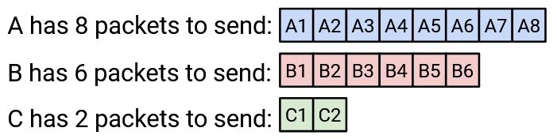
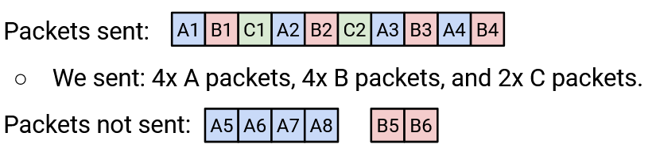
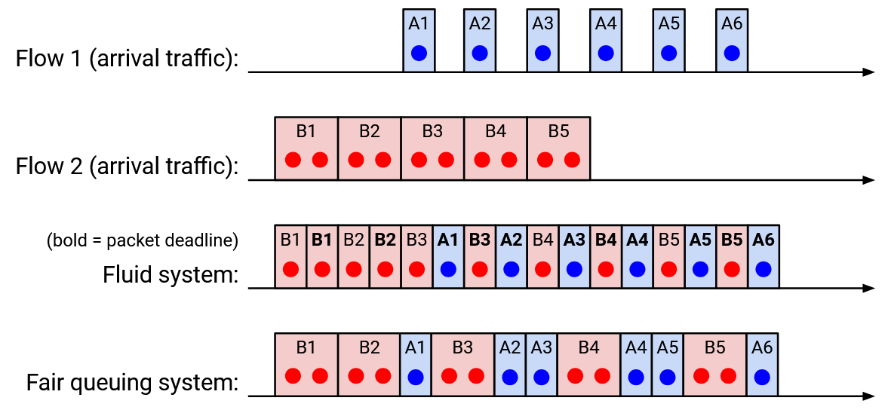

Kiểm soát tắc nghẽn hỗ trợ bởi Router
Kiểm soát tắc nghẽn với Router
Trước đây, chúng ta đã thấy một số vấn đề với các thuật toán kiểm soát tắc nghẽn dựa trên host. Nhiều vấn đề này có thể được khắc phục với sự hỗ trợ từ router (bộ định tuyến)!
TCP (Transmission Control Protocol - Giao thức kiểm soát truyền) nhầm lẫn giữa tắc nghẽn và hỏng hóc. TCP làm đầy hàng đợi, có tốc độ không ổn định, và hoạt động kém với các dòng chảy ngắn, tất cả đều vì host cần liên tục điều chỉnh tốc độ để phát hiện tắc nghẽn. Nếu router có thể thông báo cho người gửi về tắc nghẽn, hoặc thậm chí trực tiếp chỉ cho người gửi tốc độ lý tưởng, thì nhiều vấn đề này có thể được giải quyết.
Ngoài ra, nếu router thực thi chia sẻ công bằng, thì sẽ khó khăn hơn nhiều để host gian lận.
Về mặt triết lý, đây là một lựa chọn thiết kế tự nhiên để router tham gia vào kiểm soát tắc nghẽn. Tắc nghẽn xảy ra tại router, vì vậy chúng thường có nhiều thông tin hơn về tắc nghẽn so với host.
Kiểm soát tắc nghẽn hỗ trợ bởi router có thể rất hiệu quả và dẫn đến hiệu suất gần như tối ưu (sử dụng liên kết cao, độ trễ thấp), nhưng việc triển khai các giao thức này có thể gặp thách thức. Router giờ đây cần hỗ trợ chức năng bổ sung, và đôi khi chức năng đó có thể khá phức tạp. Một số giao thức thậm chí có thể yêu cầu mọi router đồng ý thêm chức năng đó.
Thực thi Fair Queuing
Làm thế nào để một router đảm bảo rằng mọi kết nối nhận được phần chia sẻ công bằng của mình?
Cho đến nay, một router đang nhận packet (gói tin), xếp hàng chúng nếu cần, và gửi chúng ra theo thứ tự first-in-first-out (FIFO - tiên nhập tiên xuất). Router không quan tâm packet đến từ kết nối nào.
Trong mô hình mới của chúng ta, router sẽ cần phân loại packet vào các kết nối. (Hiện tại, giả sử các kết nối đều là kết nối TCP.) Điều này có nghĩa là router phải nhìn vào bên trong packet để biết địa chỉ IP nguồn và đích cũng như port (cổng).
Để định nghĩa chính thức về tính công bằng, router có thể duy trì một hàng đợi riêng cho mỗi kết nối. Khi một packet đến, router thêm packet vào hàng đợi phù hợp. Sau đó, router chỉ cần chọn một hàng đợi mỗi lần, gửi packet từ đầu hàng đợi đó. Miễn là router chọn hàng đợi theo cách công bằng, thì router đang thực thi tính công bằng giữa các kết nối.
Nếu tất cả packet có kích thước giống nhau, thì router có thể chọn hàng đợi theo kiểu round-robin (luân phiên - gửi từ hàng đợi đầu tiên, sau đó hàng đợi thứ hai, v.v.). Hóa ra cách này hoạt động, ngay cả khi không phải tất cả kết nối cần cùng bandwidth (băng thông). Một số kết nối có thể xếp hàng packet chậm hơn những kết nối khác. Nếu chúng ta áp dụng dịch vụ round-robin cho các kết nối có bandwidth khác nhau, làm thế nào để tính toán bandwidth được phân bổ cho mỗi kết nối? Ví dụ, giả sử chúng ta có thể gửi 10 packet mỗi giây, và A, B, và C gửi 8, 6, và 2 packet mỗi giây, tương ứng.
Nếu chúng ta gửi packet theo kiểu round-robin, thì sẽ có bao nhiêu packet mỗi giây của mỗi loại được gửi? Chúng ta có thể mô hình hóa điều này như một vấn đề phân bổ tài nguyên và giải quyết nó.
Ví dụ, giả sử chúng ta có dung lượng liên kết là 10. Kết nối A yêu cầu 8, B yêu cầu 6, và C yêu cầu 2. Làm thế nào để phân bổ dung lượng giữa ba kết nối? Nếu chúng ta cố gắng công bằng, mọi người sẽ nhận 3.33. Nhưng C chỉ yêu cầu 2, vì vậy hãy cho C 2 mà nó yêu cầu, không thêm thừa.
Bây giờ chúng ta còn dư 8, và A và B vẫn cần phân bổ. Nếu chúng ta công bằng, mỗi bên sẽ nhận 4. Điều này ít hơn những gì chúng yêu cầu, nhưng chúng ta không có cách nào để thỏa mãn yêu cầu của chúng, vì vậy chúng ta sẽ cho mỗi bên phần chia sẻ công bằng là 4.
Chính thức, để định nghĩa max-min fairness (tính công bằng max-min), giả sử C là tổng bandwidth có sẵn cho router. Mỗi kết nối $$r_i$$ có nhu cầu bandwidth, và chúng ta phải phân bổ bandwidth $$a_i$$ cho mỗi kết nối. Các phân bổ bandwidth max-min là $$a_i = \min(f, r_i)$$, trong đó $$f$$ là giá trị duy nhất (giá trị giống nhau cho tất cả kết nối) sao cho $$\sum a_i = C$$. Trong phương trình này, thuật ngữ min đảm bảo rằng không ai nhận nhiều hơn những gì họ yêu cầu, và ràng buộc tổng đảm bảo rằng không có bandwidth nào bị lãng phí. Trực quan, $$f$$ là phần chia sẻ công bằng mà chúng ta phân bổ đều cho mọi người (do đó một giá trị $$f$$ cho tất cả kết nối).
Một cách khác để đọc phương trình này là: Có một con số chia sẻ công bằng kỳ diệu mà chúng ta có thể phân bổ đều cho mọi người. Nếu bạn yêu cầu ít hơn phần chia sẻ công bằng, bạn nhận phần chia sẻ công bằng (không thêm thừa). Nếu bạn yêu cầu nhiều hơn phần chia sẻ công bằng, bạn bị giới hạn ở phần chia sẻ công bằng, nhưng không ai khác nhận nhiều hơn bạn.
Trong ví dụ trước, $$f$$ là 4. A và B nhận $$f$$ (chúng muốn nhiều hơn), và C nhận 2 (nó muốn ít hơn).
Nếu chúng ta áp dụng max-min fairness, phương trình đảm bảo rằng nếu bạn không nhận đầy đủ nhu cầu của mình, không ai khác nhận nhiều hơn bạn. Cách tiếp cận round-robin là max-min fair (giả sử kích thước packet bằng nhau).
Điều gì nếu chúng ta không giả sử kích thước packet bằng nhau? Trong thực tế, kích thước packet có thể khác nhau lớn (ví dụ 40 byte so với 1500 byte). Lý tưởng, chúng ta muốn thực hiện bit-by-bit round robin (luân phiên từng bit), nơi chúng ta luân phiên gửi một bit từ hàng đợi của mỗi kết nối. Điều này không thực tế (chúng ta không gửi một bit mỗi lần), nhưng nếu chúng ta áp dụng lý thuyết này, chúng ta có thể ghi lại thời điểm bit cuối cùng của một packet được gửi ra, cho mọi packet. Chúng ta sẽ gọi đây là deadline (hạn chót) cho packet đó. Sau đó, một xấp xỉ công bằng sẽ là gửi packet theo thứ tự deadline (khi bit cuối cùng của chúng sẽ được gửi lý tưởng).
Sự thật thú vị: Bài báo về mô phỏng fair queuing (xếp hàng công bằng) rất có ảnh hưởng, và hai trong số các tác giả là Scott Shenker (giảng viên UC Berkeley) và Srinivasan Keshav (sinh viên tiến sĩ EECS lúc đó).
Dưới đây là ví dụ về fair queuing bit-by-bit chính xác trên hai kết nối (khi có hòa, chúng ta chọn packet đến trước).
Fair Queuing trong Thực tế
Fair queuing có gì tốt? Nó đảm bảo sự cô lập giữa các kết nối, và ngăn chặn các kết nối gian lận nhận nhiều bandwidth hơn. Các kết nối sẽ không cần triển khai TCP (hoặc một lựa chọn thay thế thân thiện với TCP), và có thể chọn thuật toán kiểm soát tắc nghẽn riêng của mình (có thể không thân thiện).
Về cơ bản, lợi ích của fair queuing là khả năng phục hồi trước các yếu tố bên ngoài như gian lận và biến đổi RTT (Round-Trip Time - thời gian khứ hồi). Dù sao đi nữa, mọi người đều nhận được phần chia sẻ công bằng của một liên kết nhất định. Nhưng, chúng ta vẫn cần các host đầu cuối phát hiện và thích ứng với phần chia sẻ công bằng của mình (ví dụ chậm lại nếu chúng yêu cầu quá nhiều).
Fair queuing có gì xấu? Nó phức tạp hơn nhiều so với xếp hàng FIFO. Quá trình tính toán deadline khó khăn và chúng ta chưa trình bày thuật toán để làm điều đó ở đây. Ngoài ra, router sẽ cần duy trì nhiều hàng đợi, và thực hiện công việc phân tích bổ sung trên mọi packet.
Trong thực tế, chúng ta không thể triển khai fair queuing hoàn hảo trong router (quá phức tạp để chạy ở tốc độ cao), nhưng các xấp xỉ tồn tại (ví dụ Deficit Round Robin). Các router hiện đại thường triển khai các xấp xỉ, mặc dù với ít hàng đợi hơn. Ít hàng đợi hơn nghĩa là thay vì một hàng đợi cho mỗi kết nối, sự cô lập thô hơn (ví dụ một hàng đợi cho mỗi khách hàng).
Fair queuing không thể loại bỏ tắc nghẽn. Nó chỉ là một cách thay thế để quản lý tắc nghẽn. Ví dụ, hãy xem xét liên kết nút cổ chai này: Nó có thể phân bổ 0.5 Gbps cho mỗi kết nối, điều này đánh bại gian lận. Nhưng, nếu kết nối trên cùng chạy ở 0.5 Gbps, thì 0.4 Gbps sẽ bị drop tại liên kết tiếp theo ngay lập tức. Một phân bổ tốt hơn sẽ là gửi 0.1 Gbps dọc theo kết nối trên cùng, và 0.9 Gbps dọc theo kết nối dưới cùng.
Về cơ bản, vấn đề là liên kết nút cổ chai này không biết điều gì sẽ xảy ra tại các liên kết tương lai (hạ lưu). Cách duy nhất để khắc phục là làm cho host người gửi chậm lại (xếp hàng router không thể giúp).
Fair queuing mang lại tính công bằng cho mỗi kết nối, nhưng về mặt triết lý, chúng ta vẫn phải hỏi liệu đây có phải là mô hình công bằng đúng đắn không. Như chúng ta đã thấy trước đó, tính công bằng cho mỗi kết nối nghĩa là ai đó có nhiều kết nối hơn vẫn nhận nhiều bandwidth hơn. Chúng ta có nên thực thi tính công bằng cho mỗi cặp nguồn-đích, hoặc có lẽ cho mỗi nguồn? Chúng ta có nên phạt các kết nối sử dụng nhiều liên kết tắc nghẽn hơn (chiếm nhiều tài nguyên khan hiếm hơn)?
Kiểm soát tắc nghẽn hỗ trợ bởi Router
Fair queuing thực thi tính công bằng trên một liên kết cụ thể, nhưng nó không thông báo gì cho người gửi. Điều gì nếu router truyền thông tin ngược lại cho người gửi để giúp người gửi điều chỉnh tốc độ của mình?
Một giải pháp là để router trực tiếp chỉ cho người gửi tốc độ mà chúng nên sử dụng. Chúng ta có thể thêm một trường rate trong packet, và để router điền vào trường đó với phần chia sẻ công bằng của kết nối. Khi packet đến người gửi, người gửi có thể đọc header và đặt tốc độ theo những gì router nói. Bây giờ, người gửi không cần điều chỉnh động để phát hiện tốc độ tốt.
Một giải pháp khác là để router thông báo cho người gửi về tắc nghẽn (mà không chỉ định tốc độ chính xác). Điều này được triển khai dưới dạng bit Explicit Congestion Notification (ECN - Thông báo tắc nghẽn rõ ràng) trong IP header (tiêu đề IP). Nếu một packet đi qua một router tắc nghẽn, router đặt bit đó thành 1. Khi người nhận nhận packet với bit ECN bật, ack (xác nhận) trả lời cũng sẽ có bit ECN được đặt, vì vậy người gửi biết về tắc nghẽn.
Có nhiều lựa chọn cho việc khi nào router đặt bit này. Router có thể hoang tưởng và đặt bit thường xuyên, điều này giảm độ trễ nhưng có thể dẫn đến liên kết không được sử dụng đầy đủ. Hoặc, router có thể liều lĩnh hơn và hiếm khi đặt bit, điều này tăng độ trễ nhưng dẫn đến sử dụng liên kết cao.
Cũng có nhiều lựa chọn cho cách host phản ứng khi bit này được đặt. Ví dụ, host có thể giả vờ packet bị drop và điều chỉnh tương ứng.
ECN có gì tốt? Nó giải quyết vấn đề nhầm lẫn giữa hỏng hóc và tắc nghẽn. Nó cho phép router cảnh báo host về tắc nghẽn sớm hơn (ví dụ trước khi hàng đợi đầy), điều này có thể giảm độ trễ. Nó cũng nhẹ để triển khai.
Trong thực tế, ECN hiệu quả yêu cầu hầu hết hoặc tất cả router hỗ trợ giao thức này và bật bit khi cần thiết. Trong Internet hiện đại, bit ECN được triển khai trên một số, nhưng không phải tất cả router. Tuy nhiên, bit ECN có thể hiệu quả trong một mạng nhỏ (ví dụ bên trong mạng cục bộ của datacenter) nơi tất cả router đồng ý kích hoạt bit.